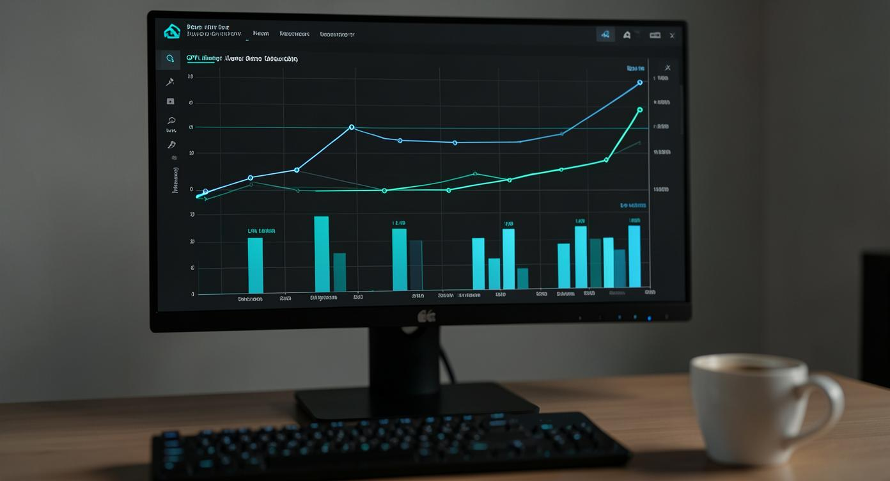

Private LLM for Enterprise: Self-Host AI Without Data Leak
जब कोई कंपनी AI अपनाने की सोचती है, तो सबसे पहला सवाल तकनीक का नहीं होता — "क्या हमारा data बाहर जाएगा?" HR की फाइलें, ग्राहक के अनुबंध, वित्तीय रिपोर्ट, सोर्स कोड — यह सब किसी बाहरी API पर भेजना कानूनी और व्यावसायिक दोनों दृष्टि से जोखिम भरा है। यही वजह है कि बड़े संगठन private LLM की ओर जा रहे हैं, यानी ऐसा AI model जो उनके अपने सर्वर या अपने cloud account के अंदर चले।
इस आर्टिकल में मैं practical तरीके से बताऊँगा कि private LLM क्या है, open-weight models में से कौन सा चुनें, GPU और memory का हिसाब कैसे लगाएँ, security के कौन से controls ज़रूरी हैं, और छह कदमों में इसे अपने संगठन में कैसे उतारें। साथ में यह भी बताऊँगा कि कब self-host करना समझदारी नहीं है, क्योंकि कई टीमें बिना हिसाब लगाए इस रास्ते पर चली जाती हैं और बाद में पछताती हैं।
छोटा जवाब: Private LLM का मतलब है open-weight model (जैसे Llama, Mistral, Qwen, Gemma) को अपने infrastructure पर चलाना, जहाँ prompts और data आपके नेटवर्क से बाहर न जाएँ। इसके लिए एक GPU सर्वर, एक inference server (vLLM या Ollama) और access control चाहिए। सही शुरुआत छोटे model और एक restricted use case से करें, न कि पूरे संगठन के लिए एक बड़े model से।
Private LLM क्या है और cloud API से कैसे अलग है
जब आप किसी बंद AI service का API इस्तेमाल करते हैं, तो आपका prompt उस कंपनी के सर्वर तक जाता है और वहाँ process होता है। ज़्यादातर providers कहते हैं कि वे training के लिए data इस्तेमाल नहीं करते, पर data का आपके नेटवर्क से बाहर जाना अपने आप में एक compliance घटना है जिसे आपको दर्ज करना पड़ सकता है।
Private LLM में model आपके infrastructure पर चलता है। Prompt आपके नेटवर्क से नहीं निकलता, logs आपके पास रहते हैं, और आप तय करते हैं कि कौन सा उपयोगकर्ता क्या पूछ सकता है। यह अंतर छोटा नहीं है — यह पूरे compliance और audit के तरीके को बदल देता है।
यहाँ एक ज़रूरी बात समझ लें। "Private" का मतलब हमेशा "on-premises" नहीं होता। अगर आप वही open-weight model अपने cloud account के अंदर चलाते हैं, तो भी data आपके tenant में रहता है और यह private deployment माना जाता है। इसलिए चुनाव दो स्तरों पर होता है — model कौन सा है, और वह कहाँ चलता है।
| पहलू | Public API | Private LLM |
|---|---|---|
| Data कहाँ जाता है | Provider के सर्वर तक | आपके नेटवर्क के अंदर ही रहता है |
| शुरुआती खर्च | लगभग शून्य | GPU या आरक्षित capacity |
| हर request का खर्च | Token के हिसाब से | लगभग तय, hardware का |
| Model की गुणवत्ता | सबसे नए बड़े models | open-weight models तक सीमित |
| Compliance | Provider पर निर्भर | आपके ही controls |
| अनुकूलन | सीमित | पूरा — prompt, fine-tune, routing |
Model चुनना: बड़ा नाम नहीं, सही आकार
Open-weight models की दुनिया में हर महीने कुछ नया आता है, इसलिए नाम याद रखने की जगह श्रेणी समझ लेना ज़्यादा काम का है। आम तौर पर तीन श्रेणियाँ होती हैं — छोटे models (7–9 अरब parameters), मध्यम (13–32 अरब), और बड़े (70 अरब या ज़्यादा)। बड़ा model हमेशा बेहतर जवाब देता है, पर उसका खर्च और देरी भी बढ़ती है।
छोटे model कब काफी हैं
Summary बनाना, ईमेल का draft, classification, और fixed ढाँचे में data निकालना — इन कामों में 7–9B का model अक्सर पर्याप्त होता है। फायदा यह है कि यह एक साधारण GPU पर चल जाता है और जवाब तेज़ देता है।
मध्यम और बड़े model कब चाहिए
जहाँ तर्क करना है, लंबे दस्तावेज़ समझने हैं, या कोड लिखना-सुधारना है, वहाँ मध्यम या बड़े model की ज़रूरत पड़ती है। 30B+ models में भारतीय भाषाओं का प्रदर्शन भी आम तौर पर बेहतर होता है, पर यह model-दर-model जाँचने की बात है, मान लेने की नहीं।
| श्रेणी | आम उपयोग | GPU memory (अनुमान) |
|---|---|---|
| 7–9B (quantized) | Summary, classification, extraction | लगभग 6–10 GB |
| 13–14B | Chat, लंबे उत्तर, हल्का reasoning | लगभग 12–20 GB |
| 30–32B | कोड, विश्लेषण, बहुभाषी काम | लगभग 24–40 GB |
| 70B या अधिक | कठिन reasoning, बड़ा context | 80 GB से बहुत ऊपर |
ये संख्याएँ सिर्फ शुरुआती अनुमान हैं। असली ज़रूरत context length, batch size और quantization पर निर्भर करती है। इसलिए एक छोटा test चलाकर देखें — कागज़ पर हिसाब लगाकर सर्वर खरीदना सबसे महंगी गलती है।

Infrastructure: तीन चीज़ें जो पहले तय करें
पहली — inference server। vLLM तेज़ throughput और बेहतर batching देता है, इसलिए कई उपयोगकर्ताओं वाले setup में यह आम चुनाव है। Ollama और llama.cpp शुरुआत और छोटे deployments के लिए आसान हैं। दोनों की अपनी जगह है, और दोनों को एक साथ नहीं चलाना चाहिए।
दूसरी — GPU और memory। Model का वज़न, KV cache और batch के लिए जगह चाहिए। अगर आप 70B model 4-bit में चलाना चाहते हैं, तो वज़न अकेला लगभग 35–40 GB लेता है और बाकी जगह context के लिए चाहिए। इसीलिए "80 GB का एक GPU काफी होगा" जैसा अनुमान जल्दी टूट जाता है।
तीसरी — network और storage। Model files बड़ी होती हैं (कई GB), इसलिए उन्हें ठीक से cache करें। अगर कई nodes हैं, तो model distribution का तरीका पहले तय करें, वरना हर restart पर लंबा इंतज़ार करना पड़ेगा।
# vLLM के साथ एक open-weight model चलाने का सामान्य उदाहरण
# (model का नाम वही रखें जो आपके पास उपलब्ध हो)
docker run --gpus all -p 8000:8000 \
vllm/vllm-openai:latest \
--model your-org/your-model \
--max-model-len 8192 \
--gpu-memory-utilization 0.90ऊपर का command एक OpenAI-compatible endpoint बना देता है। इसका मतलब यह है कि आपके अंदरूनी tools जो पहले किसी API के लिए लिखे गए थे, वे सिर्फ base URL बदलकर इस model से बात कर सकते हैं। यही compatibility private LLM को व्यावहारिक बनाती है।
Security के आठ controls जो ज़रूरी हैं
Self-host करने से data अपने आप सुरक्षित नहीं हो जाता। नियंत्रण आपके हाथ में आता है, पर उसे लागू करना आपका काम है। मेरे अनुभव में ये आठ चीज़ें सबसे ज़्यादा फर्क डालती हैं।
- Authentication और roles। हर उपयोगकर्ता की पहचान हो, और कौन सा endpoint किसके लिए खुला है — यह तय हो।
- Prompt logging की नीति। Logs रखें, पर संवेदनशील field mask करें और retention की अवधि तय करें।
- Network isolation। Inference server सिर्फ अंदरूनी नेटवर्क पर हो, सीधे internet पर नहीं।
- Rate limit और quota। एक टीम पूरा GPU न खा जाए, इसके लिए सीमा तय करें।
- Model access की समीक्षा। जो model download हो रहा है, उसका source और license जाँचें।
- Output filters। संवेदनशील data (जैसे PII) जवाब में न आए, इसके लिए जाँच रखें।
- Audit trail। किसने कब क्या पूछा — कम से कम metadata स्तर पर दर्ज हो।
- Backup और patch। Inference stack पर security updates आते रहते हैं; उन्हें लागू करने की आदत रखें।
खर्च: कब self-host सस्ता पड़ता है
यह सवाल सबसे ज़्यादा गलत हिसाब से तय होता है। लोग सिर्फ GPU का महीना देखते हैं और भूल जाते हैं कि उसके साथ बिजली, रैक, बैकअप, monitoring और इंजीनियर का समय भी जुड़ता है।
| मद | क्या शामिल है | ध्यान दें |
|---|---|---|
| GPU capacity | आरक्षित GPU या खरीदा हुआ सर्वर | 24×7 चलाने पर बिजली और ठंडा करना |
| Storage | Model files, logs, backups | बड़े model कई बार version में रहते हैं |
| Monitoring | Metrics, alerts, dashboards | बिना इसके outage पता नहीं चलता |
| इंजीनियर का समय | Setup, updates, tuning | यही सबसे बड़ी छिपी लागत है |
| Evaluation | Model की गुणवत्ता जाँचना | हर अपग्रेड पर दोबारा |
सीधा नियम यह है — अगर आपका उपयोग बहुत कम है, तो public API सस्ता रहेगा। Self-host तब समझदारी है जब उपयोग लगातार बना रहता है, data संवेदनशील है, और आपके पास इसे संभालने वाली टीम है। हर हाल में दोनों का हिसाब महीने के हिसाब से लिखकर तुलना करें, अंदाज़े से नहीं।
छह कदमों में rollout
कदम 1 — एक use case चुनें। पूरे संगठन के लिए सामान्य assistant बनाने की कोशिश न करें। एक ऐसा काम चुनें जिसमें साफ input और output हो, जैसे support tickets को श्रेणी में बाँटना।
कदम 2 — baseline बनाएँ। उसी काम पर आज क्या हो रहा है, यह नापें — कितना समय लगता है, कितनी गलती होती है। बिना baseline के बाद में सुधार साबित करना मुश्किल होगा।
कदम 3 — छोटा model चलाएँ। एक GPU पर छोटे model से शुरुआत करें। लक्ष्य परफेक्ट जवाब नहीं, pipeline का काम करना है।
कदम 4 — अपने data पर जाँचें। 100–200 असली उदाहरण लें और जवाब हाथ से जाँचें। यह कदम सबसे ज़्यादा समय लेता है और सबसे ज़्यादा सच बताता है।
कदम 5 — access और logging जोड़ें। जब नतीजा ठीक लगे, तभी इसे टीम के लिए खोलें — पहले एक छोटे समूह के लिए, और पूरे audit के साथ।
कदम 6 — मापें और दोहराएँ। गुणवत्ता, देरी और खर्च — तीनों पर नज़र रखें। जब ज़रूरत बढ़े, तभी बड़े model या ज़्यादा GPU की सोचें।
RAG, fine-tuning और evaluation
अगर model को आपकी कंपनी की जानकारी चाहिए, तो पहला रास्ता RAG है — दस्तावेज़ों को खोजकर जवाब के साथ भेजना। यह fine-tuning से सस्ता और तेज़ है, और जानकारी बदलने पर दोबारा training नहीं चाहिए।
Fine-tuning तब करें जब आपको style या एक खास ढाँचा सिखाना हो, जानकारी नहीं। और evaluation कोई एक बार का काम नहीं है — हर model बदलाव, हर prompt बदलाव के बाद वही test set दोबारा चलाएँ। जो टीम यह नहीं करती, उसका "सुधार" अक्सर किसी और जगह गिरावट बन जाता है।
पाँच गलतियाँ जो सबसे ज़्यादा महंगी पड़ती हैं
पहली — सबसे बड़ा model खरीदकर शुरुआत करना। दूसरी — GPU का हिसाब कागज़ पर लगाकर सर्वर खरीद लेना। तीसरी — security को बाद में देखने की सोचना। चौथी — evaluation का कोई तय test set न रखना। पाँचवीं — एक ही बार में पूरे संगठन के लिए खोल देना।
इनमें सबसे आम पहली है। बड़ा model शुरुआत में अच्छा लगता है, पर जब latency बढ़ती है और खर्च दिखता है, तो टीम को वापस छोटे model पर आना पड़ता है — और तब तक महीने बर्बाद हो चुके होते हैं।
मैंने इस setup से क्या सीखा
सबसे बड़ी सीख यह रही कि private LLM की असली चुनौती model नहीं, संचालन है। Model चलाना दो दिन का काम है; उसे हर हफ्ते सही चलाए रखना, latency देखना और जवाब की गुणवत्ता नापना — यही असली काम है।
दूसरी सीख — छोटा model अपने data पर बड़े model से बेहतर निकल सकता है, अगर context ठीक से दिया जाए। हमारे एक केस में 8B model ने 70B से बेहतर नतीजा दिया, क्योंकि हमने RAG से सही दस्तावेज़ दिए और prompt छोटा रखा।
तीसरी सीख — इसे "AI project" नहीं, "infrastructure project" मानें। जिस टीम ने इसे monitoring और alerting की तरह संभाला, उनका rollout आसान रहा; जिन्होंने इसे demo की तरह लिया, वहाँ तीन महीने बाद भी कोई भरोसेमंद सेवा नहीं थी।
अक्सर पूछे जाने वाले सवाल
क्या private LLM के लिए ज़रूरी है कि सब कुछ on-prem हो?
नहीं। आप open-weight model अपने cloud account के अंदर भी चला सकते हैं। ज़रूरी बात यह है कि data आपके नियंत्रण वाले environment में रहे और उसका access आप तय करें।
एक GPU से कितने उपयोगकर्ता चला सकते हैं?
यह model के आकार, context length और जवाब की लंबाई पर निर्भर है। छोटे model पर 20–50 हल्के उपयोगकर्ता चल सकते हैं, पर यह अनुमान है — असली संख्या वही है जो आपके load test से निकले।
क्या open-weight model हिंदी में अच्छा काम करते हैं?
कई models ठीक काम करते हैं, पर हर एक की हिंदी क्षमता अलग है। अपने ही 50–100 असली सवालों पर जाँचें — बेंचमार्क के अंक आपकी भाषा और आपके domain के लिए कुछ नहीं कहते।
क्या इसे छोटी टीम संभाल सकती है?
हाँ, अगर दायरा छोटा रखा जाए — एक model, एक use case, और managed GPU। पर तीन से ज़्यादा models और कई टीमों के उपयोग के लिए कम से कम एक समर्पित इंजीनियर चाहिए।
क्या यह public API से सस्ता है?
हमेशा नहीं। कम उपयोग में API सस्ता रहता है। जब उपयोग लगातार और बड़ा हो, data संवेदनशील हो, और टीम मौजूद हो — तब self-host आर्थिक रूप से समझदारी बनता है।
अगर आप अपने संगठन में AI को ठीक से उतारना चाहते हैं, तो इसे एक प्रोजेक्ट की तरह चलाएँ — पहले छोटा proof of concept, फिर पूरा rollout। हमारे Proof of Concept की गाइड, Product Development के चरणों और event-driven architecture वाले आर्टिकल इसमें क्रम बनाए रखने में मदद करेंगे।
आगे पढ़ें: तकनीकी जानकारी के लिए vLLM documentation, Ollama और AI risk प्रबंधन के लिए NIST AI RMF देखें। Hardware की संख्याएँ बदलती रहती हैं, इसलिए अपने setup पर नापें।